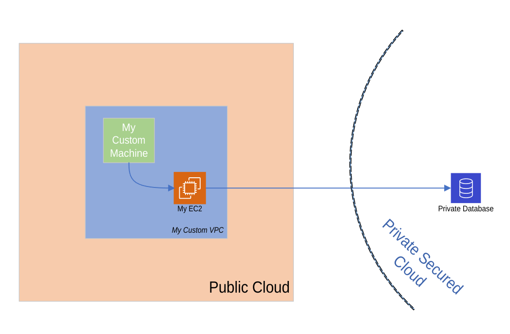
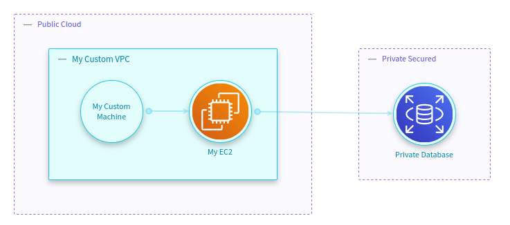

Visio Quickstart
What is Microsoft Visio?
Note: It is important to notice that the only supported Visio format is the VSDX format. If you want to import another format, you previously need to convert it to vsdx. Otherwise, you will get an error.
Microsoft Visio is a tool that enables its users to freely draw diagrams of any kind from scratch or based on templates.
From the point of view of StartLeft, it is a place where infrastructure or threat model diagrams can be created. Despite the fact that Visio gives their users complete freedom to build whatever they want in the diagram, architecture or threat modeling diagrams tend to share a more or less common structure and StartLeft pretends to take advantage of this in order to automatize the processing of the diagrams to create threat models in the OTM format.
Microsoft Visio Stencils
Visio Stencils are a specially interesting use case, because they are predefined Visio shapes that can be reused in every diagram. StartLeft is able to identify this kind of shapes so that their mappings can be also reused for converting different diagrams. This is the case, for example, of the Visio AWS stencils, that are prebuilt shapes which represent a bunch of reusable AWS components. This feature allows StartLeft clients like IriusRisk to define a default mapping file with all these stencils and inject it in every request to StartLeft so the user does not need to create the mappings each time.
Other tools
VSDX is a structure to represent diagrams based on XML files, but each diagramming tool can (and actually does) fill that structure in slightly different ways. This means that StartLeft cannot support out-of-the-box VSDX files generated by every tool. So, if you export to VSDX a diagram created in DrawIO, for example, some errors may appear during the StartLeft parsing process.
Currently, apart from native Microsoft Visio diagrams, only Lucidchart exported diagrams are supported. The mappings and the main parsing process are almost equal in both cases, but you can check out the Lucidchart support page to best know about the parsing of diagrams created with that tool.
The slp_visio module
The slp_visio module is the StartLeft Processor responsible for converting Microsoft Visio files into OTM.
Although not every diagram is susceptible to be parsed into OTM automatically, the fact is that there are many
situations where the StartLeft process may be very useful.
Mapping introduction
Its operation is based on two types of mapping files hierarchically processed, that is, in case a shape is mapped in both mapping files, the mapping in the custom mapping file has preference over the default one:
- The default mapping file is expected to contain those mappings that may be potentially reused across different conversion requests. The typical use cases for this mapping file are predefined Visio Shapes like the AWS stencils mentioned before or more simple shapes like the database shape, for example.
- The custom mapping file is the file where the user can introduce the mappings for their own specific components. As mentioned above, the user has absolute freedom to draw and name shapes that may be relevant for the threat model. Only mapped shapes will be parsed into the OTM so this is the place where you need to place the mappings for everything you want to be processed.
Further details about the mapping behavior may be found in the Visio-Mapping page. Regarding the usage of StartLeft to converting Visio files, you can check the manuals for the CLI and the REST API.
Elements position and representation
The Visio processor can process the Visio shapes and extract from them information about their representation. This data is then placed in the OTM RepresentationElement object. In the Representations parsing page you can find all the details about how the representation data is extracted from Visio, but, summarizing, these are the most important points:
- Position and size are parsed, but not the shape (circle, square, etc.).
- Representation information is extracted from Visio, but not calculated. This means that TrustZones generated by default or coming from a boundary line will not have representation data in the OTM.
- The position of the elements in the OTM is relative to its immediate parent.
- All representation information is given in integers with no decimals and rescaled to avoid losing information.
A basic example
Suppose you have an architecture diagram like the one below, that contains two TrustZones (Public Cloud and Private Secured Cloud), a VPC and components that may belong to Stencils (My EC2 and Private Database) or generic ones (My Custom Machine).

You may want to upload it to a threat modeling tool like IriusRisk to build a threat model like this:

The most usual configuration for performing this conversion is having two mapping files. On one hand, you would have your reusable default mapping file that contains mappings for the AWS stencils, with a content like this:
trustzones:
- label: Public Cloud
type: Public Cloud
id: b61d6911-338d-46a8-9f39-8dcd24abfe91
components:
- label: Amazon EC2
type: ec2
- label: Database
type: rds
dataflows: []
On the other hand, for this specific request, you need to provide a custom mapping file which contains the mappings for the generic elements of the diagram (My Custom VPC, My Custom Machine and the Private Secured Cloud TrustZone):
trustzones:
- label: Private Secured Cloud
type: Private Secured
id: 2ab4effa-40b7-4cd2-ba81-8247d29a6f2d
components:
- label: My Custom Machine
type: empty-component
- label: My Custom VPC
type: empty-component
dataflows: []
The result of sending to StartLeft this diagram with these mapping files would be an OTM with all the components we had in the original Visio source:
basic-visio-example.otm
{
"otmVersion": "0.1.0",
"project": {
"name": "My Visio Basic Example",
"id": "my-visio-basic-example"
},
"representations": [
{
"name": "Visio",
"id": "Visio",
"type": "diagram",
"size": {
"width": 1000,
"height": 1000
}
}
],
"trustZones": [
{
"id": "b61d6911-338d-46a8-9f39-8dcd24abfe91",
"name": "Public Cloud",
"risk": {
"trustRating": 10
}
},
{
"id": "2ab4effa-40b7-4cd2-ba81-8247d29a6f2d",
"name": "Private Secured",
"risk": {
"trustRating": 10
}
}
],
"components": [
{
"id": "67",
"name": "My Custom VPC",
"type": "empty-component",
"parent": {
"trustZone": "b61d6911-338d-46a8-9f39-8dcd24abfe91"
}
},
{
"id": "12",
"name": "My EC2",
"type": "ec2",
"parent": {
"component": "67"
}
},
{
"id": "30",
"name": "Private Database",
"type": "rds",
"parent": {
"trustZone": "2ab4effa-40b7-4cd2-ba81-8247d29a6f2d"
}
},
{
"id": "68",
"name": "My Custom Machine",
"type": "empty-component",
"parent": {
"component": "67"
}
}
],
"dataflows": [
{
"id": "34",
"name": "0d61e659-90a3-450e-adca-65aa08382c68",
"source": "12",
"destination": "30"
},
{
"id": "69",
"name": "f6d209c4-a507-48ca-a9ed-7d10c1d0cc78",
"source": "68",
"destination": "12"
}
]
}
CLI
Note: Before continue, make sure you have StartLeft properly installed in your machine.
First of all, retrieve all the necessary files:
- Download the
visio-basic-example.vsdxfrom here. - Save the default mapping above with the name
default-mapping.yaml. - Save the custom mapping above with the name
custom-mapping.yaml.
Now we are going to execute StartLeft for these files so that an ec2.otm file will be generated in our working
directory with identical contents to the one above.
startleft parse \
--diagram-type VISIO \
--default-mapping-file default-mapping.yaml \
--custom-mapping-file custom-mapping.yaml \
--output-file basic-visio-example.otm \
--project-id "my-visio-basic-example" \
--project-name "My Visio Basic Example" \
visio-basic-example.vsdx
cURL
You can get the same result if through the StartLeft's REST API. For that, in first place we need to set up the server with the command:
If you want to run the server in a specific port, you can do:
Then, execute the following command to retrieve the OTM file with your EC2 component:
curl --location --request POST localhost:5000/api/v1/startleft/diagram \
--header "Content-Type: multipart/form-data" \
--header "Accept: application/json" \
--form diag_type="VISIO" \
--form diag_file=@"./visio-basic-example.vsdx" \
--form default_mapping_file=@"./default-mapping.yaml" \
--form custom_mapping_file=@"./custom-mapping.yaml" \
--form id="my-visio-basic-example" \
--form name="My Visio Basic Example"